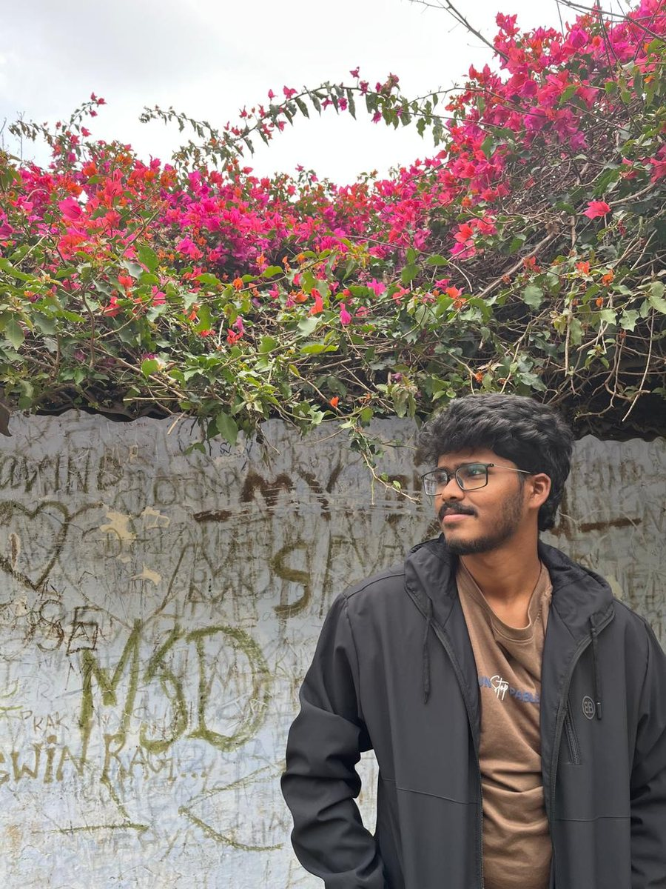
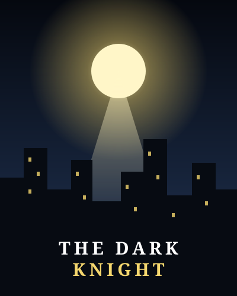
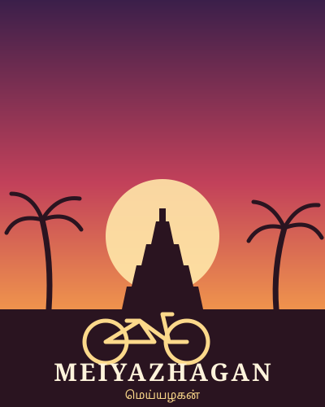
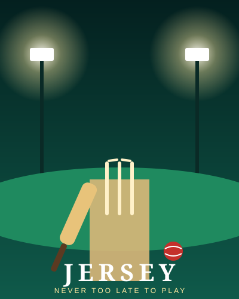
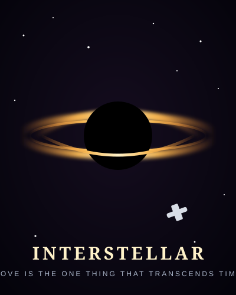
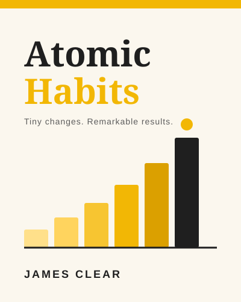
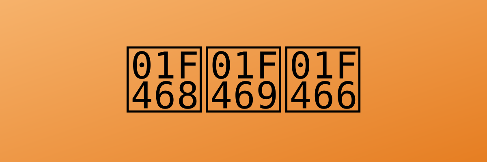
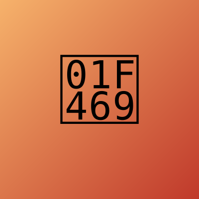
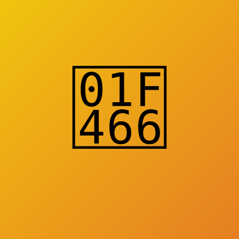

B.E. CSE (Internet of Things & Cyber Security)
SNS College of Engineering
Completed my engineering degree, building a foundation in programming, networks, IoT and cyber security.
Open to fresher roles in data and software
Software Engineer | Data Enthusiast | Cricket Lover
I build things with Python, SQL and Azure, and I like turning messy data into something people can actually use.

SNS College of Engineering
Completed my engineering degree, building a foundation in programming, networks, IoT and cyber security.
Mindful AI-NSDC
Worked on web development and application lifecycle management: defining technical requirements, designing user-centric workflows and collaborating with cross-functional teams. Also analysed the market and competitor web technologies and optimised front-end and back-end workflows.
Claysys Technologies
Designed and built dynamic, user-friendly application forms and workflows. Created responsive interfaces and implemented form validations through SQL and its data source connections.
Project
Built a deep learning system that analyses and classifies URLs as legitimate or fraudulent, to protect users from phishing attacks and online fraud.
Project on Microsoft Azure
Designed a cloud pipeline that categorises objects and scenes from raw image datasets. Collected and preprocessed data with Azure Blob Storage and trained the model on Azure Databricks.
Coimbatore, Tamil Nadu
Skilled in Python, SQL, JavaScript, system design, Azure, REST APIs, Excel and Power BI. Certified through the Deloitte Data Analytics Job Simulation and IBM courses in Cloud Computing, GenAI Essentials and Cyber Security.
Stories that stay with me long after the credits roll.
Real stories and ideas that help me see the world differently.
Reading is how I learn, slow down and think.
Following and playing the game I grew up loving.
Building pipelines on Azure and turning data into insight.
Keeping users safe from phishing and online fraud.

A hero tested by a villain who wants to prove that anyone can break. Every scene asks the same question: what would you choose when there is no good option? The Joker still gives me chills.

A warm, quiet film about going back home and the kindness of the people who remember you. It made me think about relatives, villages and how much a simple hello can mean.

A man who gave up cricket gets one more chance to wear the jersey. It is about patience, family and proving something to the one person who matters. As a cricket fan, it hits home.

Space, time and a father's promise to come back. The science is huge, yet the emotion is what stays with me, and that organ music is unforgettable.

The big idea: get just 1% better each day and the small wins pile up. Instead of chasing huge goals, you build tiny habits that fit into your day, like practising SQL for ten minutes after breakfast.

Always learning, always building, and grateful for the people who got me here.

The heart of our home and my biggest support in everything I do.

My partner in fun, and the reason I try to set a good example.